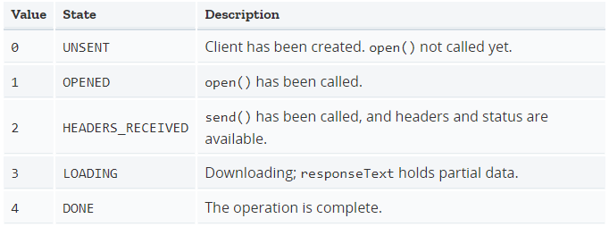

Ajax
2020.03.05 @wsl
Ajax 即“Asynchronous Javascript And XML”（异步 JavaScript 和 XML），是指一种创建交互式、快速动态网页应用的网页开发技术，无需重新加载整个网页的情况下，能够更新部分网页的技术。
通过在后台与服务器进行少量数据交换，Ajax 可以使网页实现异步更新。这意味着可以在不重新加载整个网页的情况下，对网页的某部分进行更新。
1 发送HTTP请求
在现代浏览器上写AJAX主要依靠XMLHttpRequest对象。对于低版本的IE，需要换一个ActiveXObject对象。
通过检测window对象是否有XMLHttpRequest属性来确定浏览器是否支持标准的XMLHttpRequest。
请求类型
通过 XMLHttpRequest 生成的请求可以有两种方式来获取数据，异步模式或同步模式。请求的类型是由这个 XMLHttpRequest 对象的 open() 方法的第三个参数async的值决定的。如果该参数的值为 false，则该 XMLHttpRequest请求以同步模式进行，否则该过程将以异步模式完成。
发送请求&处理响应
创建XMLHttpRequest对象后，并设置onreadystatechange的回调函数。在回调函数中，通常我们只需通过readyState === 4判断请求是否完成，如果已完成，再根据status === 200判断是否是一个成功的响应。
初始化请求。xhr.open(method, url, async)，第一个参数指定是GET还是POST，第二个参数指定URL地址，第三个参数指定是否使用异步，默认是true。
注意，千万不要把第三个参数指定为false，否则浏览器将停止响应，直到AJAX请求完成。如果这个请求耗时10秒，那么10秒内你会发现浏览器处于“假死”状态。
发送请求。xhr.send()。GET请求不需要参数，POST请求需要把body部分以字符串或者FormData对象传进去。
function success(text) {
var textarea = document.getElementById('test-response-text');
textarea.value = text;
}
function fail(code) {
var textarea = document.getElementById('test-response-text');
textarea.value = 'Error code: ' + code;
}
var request = new XMLHttpRequest(); // 新建XMLHttpRequest对象
request.onreadystatechange = function () { // 状态发生变化时，函数被回调
if (request.readyState === 4) { // 成功完成
// 判断响应结果:
if (request.status === 200) {
// 成功，通过responseText拿到响应的文本:
return success(request.responseText);
} else {
// 失败，根据响应码判断失败原因:
return fail(request.status);
}
} else {
// HTTP请求还在继续...
}
}
// 发送请求:
request.open('GET', '/api/categories');
request.send();
2 安全限制
默认情况下，浏览器遵循同源策略，JavaScript在发送AJAX请求时，URL的域名必须和当前页面完全一致。
完全一致的意思是，域名要相同（www.example.com和example.com不同），协议要相同（http和https不同），端口号要相同（默认是:80端口，它和:8080就不同）。有的浏览器宽松一点，允许端口不同，大多数浏览器都会严格遵守这个限制。
跨域的方式：
通过Flash插件发送HTTP请求
配置代理服务器，如Nginx
JSONP跨域
只能用GET请求，并且要求返回JavaScript。JSONP通常以函数调用的形式返回。
CORS
如果浏览器支持HTML5，那么就可以一劳永逸地使用新的跨域策略：CORS了。
CORS全称Cross-Origin Resource Sharing，是HTML5规范定义的如何跨域访问资源。
Origin表示本域，也就是浏览器当前页面的域。当JavaScript向外域（如sina.com）发起请求后，浏览器收到响应后，首先检查Access-Control-Allow-Origin是否包含本域，如果是，则此次跨域请求成功，如果不是，则请求失败，JavaScript将无法获取到响应的任何数据。
对于PUT、DELETE以及其他类型如application/json的POST请求，在发送AJAX请求之前，浏览器会先发送一个OPTIONS请求（称为preflighted请求）到这个URL上，询问目标服务器是否接受；服务器必须响应并明确指出允许的Method；浏览器确认服务器响应的Access-Control-Allow-Methods头确实包含将要发送的AJAX请求的Method，才会继续发送AJAX，否则，抛出一个错误。
3 XMLHttpRequest
使用 XMLHttpRequest（XHR）对象可以与服务器交互。您可以从URL获取数据，而无需让整个的页面刷新。这允许网页在不影响用户的操作的情况下更新页面的局部内容。
尽管名称如此，XMLHttpRequest 可以用于获取任何类型的数据，而不仅仅是XML，它甚至支持 HTTP 以外的协议（包括 file:// 和 FTP）。
3.1 Constructor
XMLHttpRequest()
var myRequest = new XMLHttpRequest();
3.2 Properties
只列了一部分，详见 https://developer.mozilla.org/zh-CN/docs/Web/API/XMLHttpRequest。
XMLHttpRequest.onreadystatechange
当 readyState 属性发生变化时调用的 EventHandler。
XMLHttpRequest.readyState
只读
请求的五种状态：

var xhr = new XMLHttpRequest();
console.log('UNSENT', xhr.readyState); // readyState will be 0
xhr.open('GET', '/api', true);
console.log('OPENED', xhr.readyState); // readyState will be 1
xhr.onprogress = function () {
console.log('LOADING', xhr.readyState); // readyState will be 3
};
xhr.onload = function () {
console.log('DONE', xhr.readyState); // readyState will be 4
};
xhr.send(null);
XMLHttpRequest.response
只读
包含整个响应实体（response body），响应实体的类型由 responseType 来指定， 可以是 ArrayBuffer， Blob， Document， JavaScript 对象 (即 "json")， 或者是字符串。如果请求未完成或失败，则该值为 null。
XMLHttpRequest.responseType
设置该值能够改变响应类型。就是告诉服务器你期望的响应格式。
XMLHttpRequest.status
只读
该请求的响应状态码 (例如, 状态码200 表示一个成功的请求)。
XMLHttpRequest.timeout
一个无符号长整型（unsigned long）数字，表示该请求的最大请求时间（毫秒），若超出该时间，则请求会自动结束。
XMLHttpRequestEventTarget.ontimeout
当请求超时调用的 EventHandler。
XMLHttpRequest.withCredentials
一个布尔值，表明在进行跨站(cross-site)的访问控制(Access-Control)请求时，是否使用认证信息(例如cookie或授权的header)。 默认为 false。
事件处理
作为 XMLHttpRequest 实例的属性，所有浏览器都支持 onreadystatechange。
后来，许多浏览器实现了一些额外的事件（onload、onerror、onprogress 等）。详见Using XMLHttpRequest。
更多现代浏览器，包括 Firefox，除了可以设置 on* 属性外，也提供标准监听器 addEventListener() API 来监听XMLHttpRequest 事件。
3.3 Methods
部分方法，详见只列了一部分，详见 https://developer.mozilla.org/zh-CN/docs/Web/API/XMLHttpRequest。
XMLHttpRequest.abort()
如果请求已被发送，则立刻中止请求。
XMLHttpRequest.open()
初始化一个请求。该方法只能在 JavaScript 代码中使用，若要在 native code 中初始化请求，请使用 openRequest()。
void open(
DOMString method,
DOMString url,
optional boolean async,
optional DOMString user,
optional DOMString password
);
参数：
method
请求所使用的HTTP方法；例如 "GET"、"POST"、"PUT"、"DELETE"等。如果下个参数是非HTTP(S)的URL，则忽略该参数。
url
该请求所要访问的URL
async
一个可选的布尔参数，默认为
true，表示要不要异步执行操作。如果值为false，send()方法直到收到答复前不会返回。如果true，已完成事务的通知可供事件监听器使用。如果
multipart属性为true则这个必须为true，否则将引发异常。user
用户名，可选参数，为授权使用；默认参数为空string。
password
密码，可选参数，为授权使用；默认参数为空string。
XMLHttpRequest.send()
发送请求。如果请求是异步的（默认），那么该方法将在请求发送后立即返回。